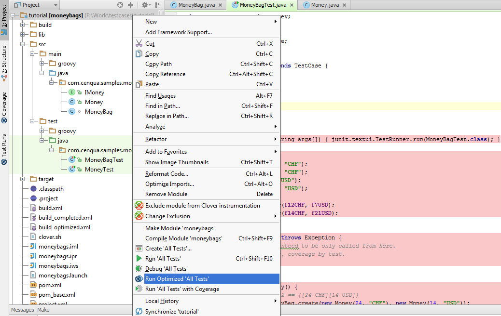
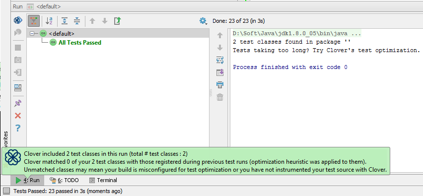
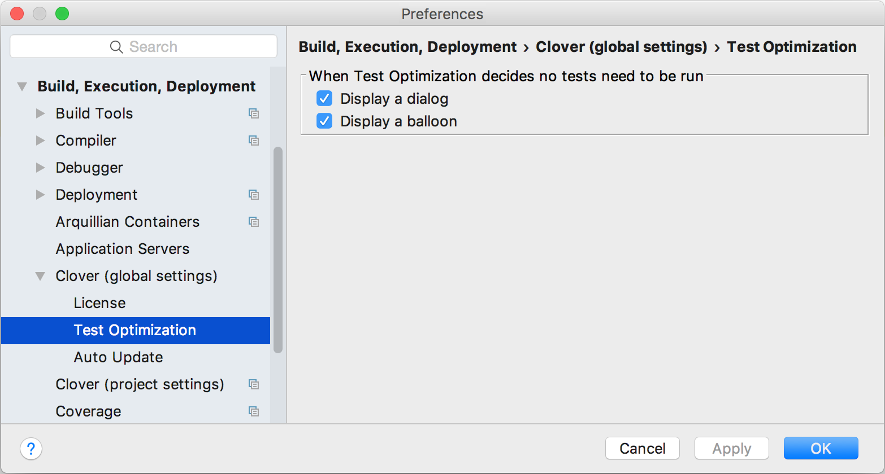
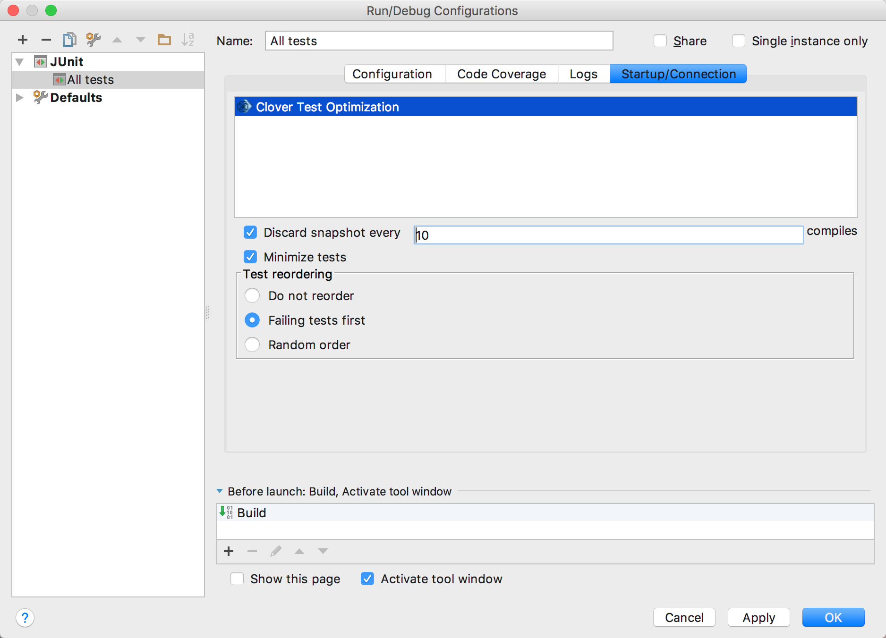

This page explains how to set up Clover's Test Optimization feature in the IDEA development environment.
On this page:
Before You Begin
Before using Test Optimization with Clover-for-IDEA, be aware of the following.
- Test Optimization is available as a 'Run Optimized' command, similar to 'Run' or 'Debug'.
- Test Optimization supports JUnit launch configurations only.
- Ensure you have Clover enabled on the project; when there is no Clover instrumentation, there is no Test Optimization.
Launching Test Optimization
To establish Test Optimization in Clover-for-IDEA, carry out one of the following actions:
- Right-click on a folder or package containing test classes and select ' Run Optimized', OR
Screen shot: launching a build with test optimization from the context menu

- Select an existing launch configuration in the Run Configurations drop-down menu and press icon.
Screenshot: Launching a Build with Test Optimization from the Drop-Down Menu
Measuring Test Optimization Results
When optimized tests are being run, Clover displays additional information about it.

After Optimized tests run, Clover saves a snapshot file with coverage information that is used to optimize the following test runs. This file may be deleted using the Delete Snapshot icon in the Clover tool bar. The Delete Snapshot icon is invisible when the project does not have the snapshot file. Test Optimization would run all tests (no optimization) when the snapshot file is deleted or absent.
Test Optimization Settings
Setting Global Preferences
Open the "Clover (global settings)" page. On this page you can defined how Clover should notify about empty test runs, i.e. ones that have all tests optimised out.
- Display a dialog: Shows a dialog box that requires the user to close it manually before test run can proceed,
- Display a balloon: Pops up a notification balloon.
Screen shot: Setting Global Preferences

Setting Per-launcher Preferences
Open the "Edit configurations" dialog, select test configuration. Next open the "Startup/Connection" tab and select the "Clover Test Optimization".
The list below shows the settings available for Test Optimization for specific JUnit configurations.
- Discard snapshot every X compiles: When enabled, snapshot is re-generated every X compiles. This is the equivalent of Ant's 'fullrunevery' setting.
- Minimize tests: when enabled, Clover will run only tests relevant to recent changes in code; when disabled, Clover will only reorder tests
- Test reordering:
- Do not reorder - run tests in the original order
- Failing tests first - re-order tests so that the ones which failed (the last time Optimized Test was run) are run first.
- Random order - re-order tests randomly; this can be useful to spot bugs which were hiding because of specific order of tests
The defaults copied to new configurations may be set using Edit Defaults button.
Screen shot: Running Optimized Configurations

Configurations Unsuitable For Test Optimization
Some configurations are not suitable for Test Optimization. Please see the following points for specific details.
Limitations with Test Suites
Clover does not recognise test suites as entities that should be optimised away. As the result test
suites are always run (never optimised).
If your test launch configuration includes both test
suite and the test case (which is probably an incorrect configuration), then the test case would be
run twice (normal behaviour) or once (via test suite) when the test case is optimised away.
Resolution: Do not include test suites in launch configuration, add test cases directly.
For more information, see this JIRA issue: CIJ-249.
Limitation with test methods
Due to bug CLOV-1084, in case when you execute optimized run and next add new test method to a class, such class will be always executed in next optimized runs. In order to fix it, you have to delete optimization snapshot (see button in tool bar menu).
Troubleshooting
To troubleshoot Test Optimization in Clover-for-IDEA, check through the following solutions:
- If Clover is disabled for the project or generally Clover does not work for the project;
- Ensure that the Clover icons are visible.
- Check whether Coverage Explorer shows any coverage for the project.
- If Clover has the test source settings wrong;
- Check whether the Test Runs tool window shows any tests.
- Ensure that Clover | Compilation | Instrument test source folders option is enabled.
- If your test case is run twice, or not optimized at all;
- Clover does not support test suites. Make sure you don't try to run one, launch test cases directly (CIJ-249).
Next chapter: 9. IDEA Advanced topics.